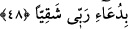
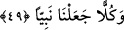

koyduğu ortaya çıkınca, âyette de ifade edildiği üzere, “Onun Allâh’ın düşmanı
olduğu kendisine belli olunca, ondan uzaklaştı.” (et-Tevbe, 9/114) “Doğrusu O,
bana çok lütufkârdır.” Bana çok iyilik ve ihsanda bulunur “dedi.”
48. “Sizden de, Allah’tan başka taptıklarınızdan da ayrılıyor ve sadece Rabb’ime
yalvarıyorum. Umarım ki, Rabb’ime yalvarmakla bahtsız olmam.”
“Sizden de” yani, size nasihatlerim etkili olmadığından dolayı dînim için senden ve
kavminden hicret edip ayrılıyorum. “Allah’tan başka taptıklarınızdan da ayrılıyor ve
sadece Rabb’ime yalvarıyorum.” İbâdet ediyorum. “Umarım ki Rabb’ime” kendisine
yaptığım duâdan dolayı “yalvarmakla bahtsız” hüsrâna uğramış, emeği boşa gitmiş
“olmam.” Burada müşriklerin tanrılarına tapmalarından dolayı azgınlık etmiş
olduklarına bir dokundurma (ta’rîz) vardır.
Hâcetini öyle bir kimseden iste ki muhtaçları
Nasipsiz göndermez kimseyi herkese verdiği nimetlerden
Hz. İbrahim’in “umulur ki” ifadesini kullanması, alçak gönüllüğünü ve güzel edebe
riâyet ettiğini ortaya koymak içindir.
49. Onlardan ve onların Allah’tan başka taptıklarından ayrılınca biz ona İshak’ı
ve Yakub’u armağan ettik ve hepsini de Peygamber yaptık.
“Onlardan ve onların Allah’tan başka taptıklarından ayrılınca” yani Şam’a hicret
ederek onlardan ayrılınca demektir. Şeyh Tefsiri’nde der ki: İbrahim Mukaddes
topraklara göç etmiştir. “Biz ona İshak’ı ve Yakub’u armağan ettik.” Yakub, İshak’ın
oğludur. Meşhur olan görüşe göre o zaman ona verilen evlâd İsmail’dir. Nitekim,
“Rabb’im bana salihlerden bir (evlâd) ver.” (es-Saffat, 37/100) diye duâ etmesinin
ardından, “Onu bilgili bir erkek çocukla müjdeledik...” (es-Saffat, 37/101)
buyrulması bunu göstermektedir. Belki de burada özellikle İshak ve Yakub’un
zikredilmesi, onların peygamberlerin ataları olmaları ya da İsmail’i üstünlüğünden
dolayı tek başına zikretmek içindir. “Ve hepsini de peygamber yaptık.” Yani onlardan